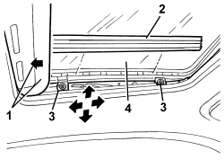
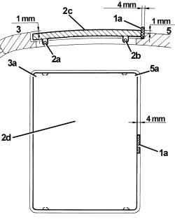

7030B17 SUN-ROOF GLASS - ALIGNMENT
- Path
- Procedures > 70 FITTINGS > 7030 SUN ROOF/GLASS PANEL > 7030B SLIDING ROOF > 7030B17 SUN-ROOF GLASS - ALIGNMENT
- Kind
- repair procedure (removal / refitting; the operation number is the code)
- Applies to
- all engines; all production periods
- Interactive page
- https://sloeber94.github.io/elrnDB/#/939004825
Applies to: all engines; all production periods
1. Place the sun roof in the closed position and open the blind.
2. Working on both sides, release the protection.
3. Loosen the bolts.

Applies to: all engines; all production periods
1. Fit a 4 mm shim (1a) between the rear of the transparent cover and the wall of the roof housing.
2. Tighten the rear bolts (2b), on both the left and the right.
3. Adjust the right front section (3a) of the transparent cover (2c) to 1 mm lower than the outside roof profile (as illustrated in the diagram), then tighten the right front bolt (2a).
4. Loosen the bolts (2b), on both the left and the right.
5. Adjust the right rear section (5a) of the transparent cover (2c) to 1 mm higher than the outside roof profile (as illustrated in the diagram), then tighten the right bolt (2b).
6. Repeat points 3 and 5 for the left side of the transparent cover.

Applies to: all engines; all production periods
- Working on both sides, fit the protection.
- Check that the sun roof is working properly in its various positions.